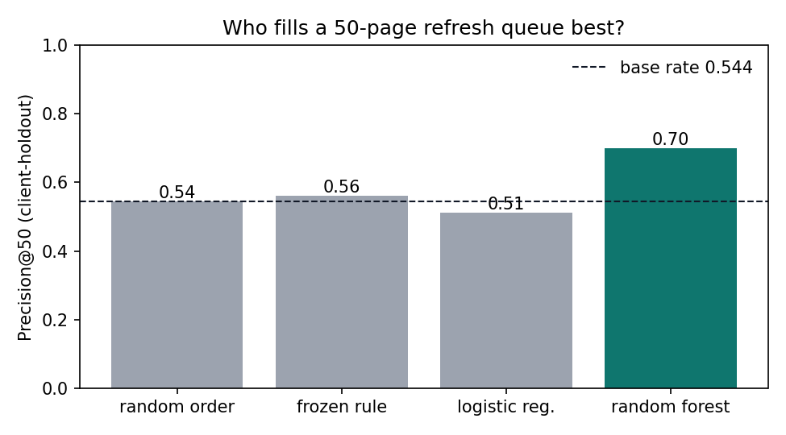
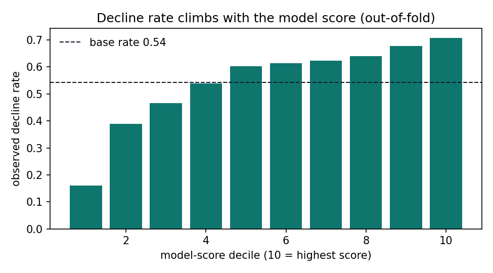
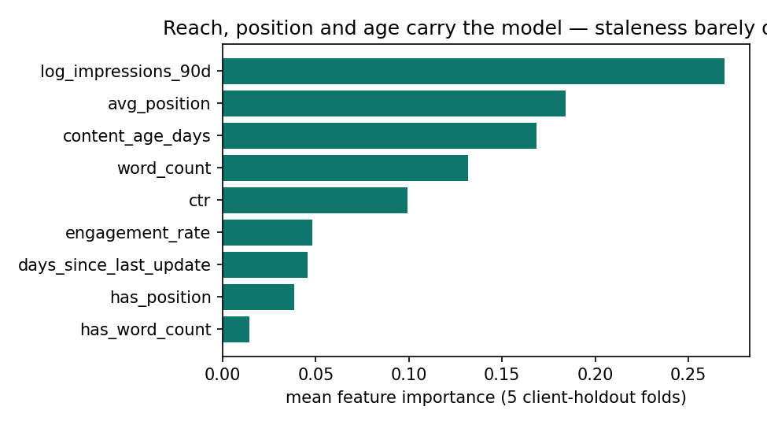

FlyRank ML Internship · Capstone research paper · Lane 2
Which pages should a content team refresh first?
A scored queue from real search data
Abstract
Content teams can only refresh a handful of pages a week — which ones first? I built a refresh-opportunity score on a real multi-client search dataset (30,000 pages across 32 pseudonymized clients, trailing-90-day metrics) and validated it the honest way: against a transparent hand rule, under a client-holdout split, with deliberate leakage tests. A random-forest ranker fills a 50-page review queue at 70% observed-declining pages, vs 56% for the hand rule and 54% for random ordering — and the same audit shows a random split would have flattered the model to 92%, a +0.22 memorization gap. The output is a ranked action queue with plain-language reason codes, built as decision-support for a weekly editorial workflow, not a forecast.
1 · The problem
A strategist managing dozens of client sites sees thousands of aging pages. Refreshing one costs real editor hours; refreshing the wrong one wastes them, and clumsily rewriting a page that still ranks can lose the ranking it holds. The decision this work supports: which ~50 pages should go into this week's review queue? — one row = one page for one client, one output = a ranked queue with a reason per row.
The obvious rule fails quietly. "Refresh what's old and visible" is FlyRank's own session logic, and it's right — inside its tiny cell. On this panel it finds only 35 pages, so it cannot even fill one week's queue. That starvation, not accuracy, is what a model must fix.
2 · Data
The public-safe FlyRank ML internship release (June 2026 build): a starter snapshot of
30,000 content items, 32 pseudonymized clients, trailing-90-day search and
engagement metrics per page. All IDs are hashes; no client names, URLs, or queries exist in the
data. Two traps the data dictionary documents and this work respects: rate columns are
×100 percentages, and avg_position = 0 means no data, not rank zero
(handled with an explicit has_position flag, never a blind fill).
Groundwork for the full 79M-row warehouse panel (17 months, 104 clients, gated on Hugging Face) is committed alongside: a verified data contract on a mid-panel month proves the grain (report_date × client × content), quantifies availability (only 36.7% of rows carry GSC data; GA4 columns are fill, not zeros, on 95.8% of rows), and rehearses a leak-free future-window label. Excluded on purpose, with reasons in the contract: label-derived trend columns (features would be circular), product decision flags (would learn the old rule, not the world), and AI-referral sessions (too sparse for label logic).
3 · Methodology
Label. A page is "declining" if its measured trailing-90-day trend is down
(trend_direction == "down"; base rate 0.542). Named honestly: label and features
share the snapshot's window, so the model ranks concurrent, observed decline — it is a
prioritization score, not a forecast. (The forecasting variant — past-window features, strictly
future label — is designed and rehearsed in the committed data contract.)
Features (9, all knowable at review time). Content age, days since last
update, log impressions, weighted average position + has_position, CTR, word count
+ has_word_count, engagement rate. Banned and assert-guarded:
trend_direction, trend_pct, is_declining_label, all IDs.
Baseline. The frozen transparent rule: updated ≥180 days ago AND ≥100 impressions/90d, ranked by impressions — one reason code, no fitted weights.
Validation. GroupKFold(5) by client: every test client fully unseen, every number out-of-fold, seed fixed (42). Two attacks committed with their receipts: (1) injecting the label's parent column sends P@50/AUC to a perfect 1.000 — proving the harness catches leaks — then it is removed; (2) swapping the grouped split for a random one inflates P@50 from 0.700 to 0.920: a +0.22 memorization gap that is itself a finding about why random splits flatter multi-client models.
4 · Results
| queue orderer | Precision@50 (client-holdout, mean of 5 folds) |
|---|---|
| random order (50 shuffles/fold) | 0.544 (= base rate) |
| frozen hand rule | 0.560 — and starves at 35 pages |
| logistic regression | 0.512 — an honest negative: linear can't use the interactions |
| random forest | 0.700 (AUC 0.653) |



Fold spread is wide (0.56–0.78) and tracks each fold's base rate (0.38–0.65) — with ~10 test clients per fold, client mix moves every number. Reported, not hidden.
5 · Limitations & honest framing
- This ranks observed, concurrent decline in one snapshot. It does not forecast next quarter, and nothing here supports a causal sentence about refreshing.
- All results are within one portfolio of 32 pseudonymized clients in one window; transfer to other portfolios or seasons is untested.
- The label inherits every quirk of trailing-window trend measurement; a future-window label on the 17-month warehouse panel is the designed next step, with per-client history checks (histories start up to 16 months apart) and the final month sealed as test.
- No page content is visible to the model — reason codes are hypotheses for a human, never diagnoses.
6 · Ranked recommendations
The deliverable an editor touches: a ranked queue where every row carries one reason code and one action, in the queue's own words —
| reason code | plain-English action |
|---|---|
STALE_VISIBLE | Untouched 180+ days but still seen in search — refresh the content. |
UNDER_CLICKING | Earns less than half its position band's typical CTR — rewrite title & description. |
PAGE1_AT_RISK | Still ranks page-1 with a high risk score — protect: update facts and internal links carefully. |
LOW_ENGAGEMENT | Visible but readers leave — review content depth and intent match. |
MODEL_FLAG | High score, no single rule explains it — human review first. |
Workflow guardrails ship with the queue: a human opens every page before acting; nothing is auto-rewritten, auto-published, or pruned from a score; and five monitoring tripwires (precision decay vs the frozen baseline, score drift, mix shift, reason-code collapse, panel events) define when to stop trusting the ranks and retrain.
7 · Reproducibility
Everything reruns from a fresh clone of
mohamedr456/flyrank-ml-internship:
notebooks under work/notebooks/ (w03 data contract →
w04 baseline → w05 model → w06 validation audit →
w07 action playbook → capstone), seeds fixed at 42, metrics receipts
committed under work/outputs/*.json, figures under work/outputs/figs/.
The warehouse notebook authenticates via a Hugging Face read token (never stored in cells).
Queue CSVs regenerate on every run and stay out of git by CI design.